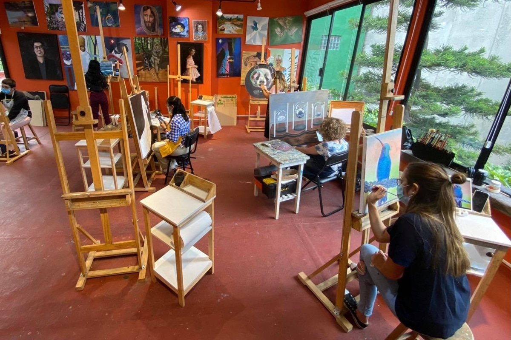
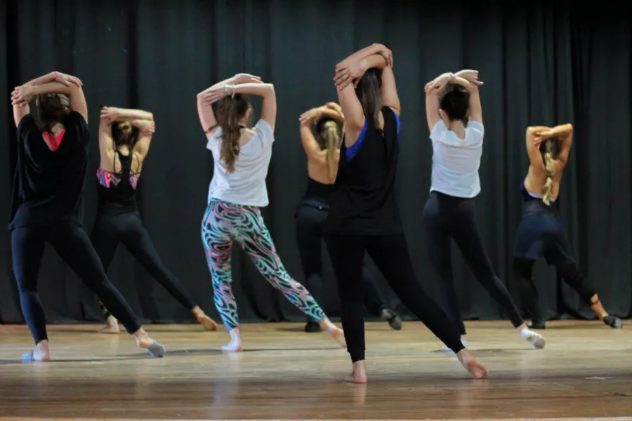
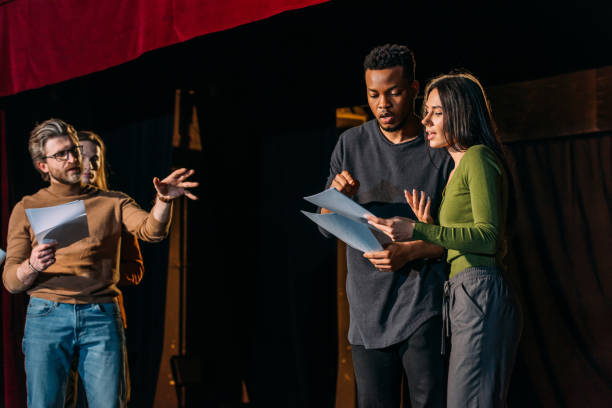

Nuestras Actividades
En "Movimiento Vivo" creemos en la cultura como participación. Te invitamos a explorar nuestros talleres y espacios formativos, pensados para todas las edades y niveles. ¡Encontrá tu lugar para crear, aprender y expresarte!
Talleres de Arte
Despertá tu lado creativo con propuestas que abarcan desde la pintura hasta la escultura y el arte digital.
- Taller de Cerámica Inicial: Aprendé las técnicas básicas de modelado y esmaltado. (Martes y Jueves 18:00hs).
- Dibujo y Pintura Libre: Un espacio para explorar tu estilo con la guía de un profesor. (Miércoles 19:00hs).
- Fotografía Urbana: Recorré el barrio y capturá su esencia con tu cámara o celular. (Sábados 10:00hs).

Música y Danza
El cuerpo y el sonido se unen en nuestras actividades rítmicas. ¡Animate a moverte y a encontrar tu propia voz!
- Clases de Guitarra Grupal: Para principiantes que quieran aprender los primeros acordes. (Lunes 17:00hs).
- Danza Contemporánea: Un espacio para la exploración del movimiento y la expresión corporal. (Viernes 20:00hs).
- Ensayo de Coro Comunitario: Abierto a todas las voces, sin necesidad de experiencia previa. (Jueves 19:30hs).

Teatro
Subite al escenario y descubrí el mundo de la actuación, la improvisación y la creación de personajes.
- Iniciación al Teatro para Jóvenes: Juegos teatrales para desarrollar la confianza y la creatividad. (Miércoles 17:30hs).
- Taller de Improvisación para Adultos: Una forma divertida de soltar el cuerpo y la mente. (Martes 20:00hs).
